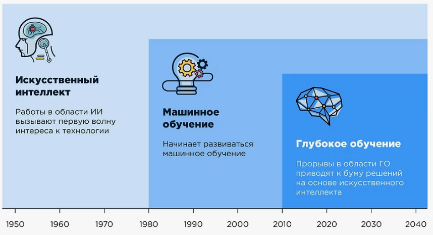
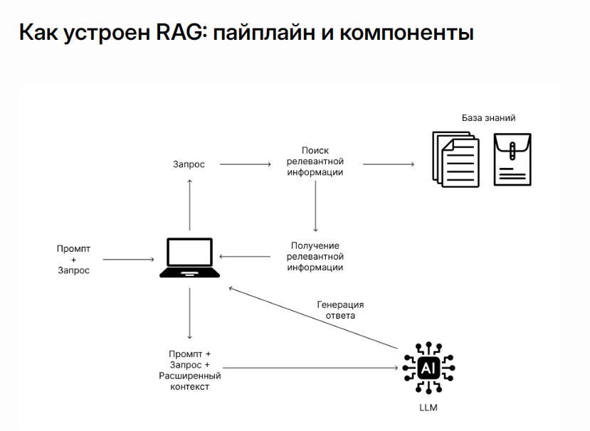

1. Понятие искусственного интеллекта
Искусственный интеллект (ИИ) — это область компьютерных наук, занимающаяся созданием систем, способных выполнять задачи, обычно требующие человеческого интеллекта. К таким задачам относятся обучение, рассуждение, распознавание образов, понимание естественного языка, принятие решений и многое другое. ИИ не является единой технологией, а скорее собирательным понятием, включающим множество подходов и методов.
Современный ИИ переживает бум благодаря трём факторам: доступности огромных объёмов данных (Big Data), росту вычислительных мощностей (особенно GPU) и развитию алгоритмов машинного обучения. Сегодня ИИ окружает нас повсюду: от рекомендаций в интернет-магазинах до автопилота в автомобилях и голосовых ассистентов.
Исторически выделяют два основных направления в ИИ. Первое — символьный (или логический) ИИ, который основан на явном представлении знаний в виде правил и фактов. Такие системы, известные как экспертные системы, хорошо работают в узких областях, но требуют ручного описания знаний и плохо справляются с неопределённостью. Второе направление — машинное обучение, где системы учатся на данных, выявляя закономерности без явного программирования. Именно машинное обучение стало доминирующей парадигмой в последние десятилетия.
Применение искусственного интеллекта сегодня охватывает практически все сферы жизни: рекомендательные системы в онлайн-магазинах и стриминговых сервисах, чат-боты в службах поддержки, медицинская диагностика, беспилотные автомобили, распознавание лиц и голоса.
2. Машинное обучение и глубокое обучение
Машинное обучение (ML) — это подход, при котором система обучается на данных, выявляя закономерности без явного программирования правил. Вместо того чтобы писать тысячи правил для каждой конкретной ситуации, разработчик предоставляет модели множество примеров, и она самостоятельно находит обобщающие паттерны.
Существует несколько типов машинного обучения, которые различаются характером данных и способом получения обратной связи. Обучение с учителем предполагает наличие размеченных данных — то есть для каждого входного примера известен правильный ответ. Такие модели используются для классификации изображений и распознавания спама. Обучение без учителя работает с немаркированными данными, позволяя выявлять скрытые структуры и группировать объекты по схожести — это применяется в кластеризации клиентов и тематическом моделировании. Обучение с подкреплением — это особый тип, при котором агент обучается взаимодействовать со средой, получая награду за желаемые действия; этот подход лежит в основе игровых ботов и систем управления роботами.
Глубокое обучение (Deep Learning) — это подраздел машинного обучения, использующий нейронные сети с большим количеством слоёв. Именно глубокие сети позволили достичь впечатляющих результатов в компьютерном зрении, обработке речи и текста. Ключевая архитектура, изменившая мир обработки естественного языка, — это трансформер, предложенный в 2017 году в статье «Attention Is All You Need». Механизм самовнимания (self-attention) позволяет модели учитывать контекст всех слов в предложении одновременно, что стало основой для больших языковых моделей.

Глубокие нейронные сети учатся представлять данные на разных уровнях абстракции: нижние слои распознают простые признаки (например, края на изображении или грамматические конструкции в тексте), а верхние слои комбинируют их в сложные концепции (лица, объекты или смысловые структуры). Именно эта способность к иерархическому обучению делает глубокое обучение таким мощным.
3. Обработка естественного языка
Обработка естественного языка (NLP) — это подраздел ИИ, занимающийся взаимодействием между компьютерами и человеческим (естественным) языком. Цель NLP — научить компьютеры понимать, интерпретировать и генерировать человеческую речь так же естественно, как это делают люди.

Задачи обработки естественного языка чрезвычайно разнообразны. Это и классификация текста — определение тональности отзыва или тематики документа, и извлечение информации — распознавание имён людей, названий компаний и связей между ними, и машинный перевод, и автоматическое суммаризация — краткое изложение длинных текстов, и ответы на вопросы, и диалоговые системы — чат-боты и голосовые ассистенты.
Долгое время NLP опирался на статистические методы и рекуррентные нейронные сети (такие как LSTM и GRU), но с появлением трансформеров качество обработки текстов резко выросло. Сегодня стандартом отрасли стали предобученные языковые модели: они сначала обучаются на огромных корпусах текстов — по сути, на всём доступном интернете, — а затем донастраиваются под конкретные задачи. Самые известные представители этого семейства — BERT (от Google), GPT (от OpenAI), T5 и Llama (от Meta).
Важно понимать, что языковые модели не «понимают» текст в человеческом смысле — они научились предсказывать вероятные продолжения последовательностей слов. Однако благодаря огромному объёму обучающих данных и сложности архитектуры, их ответы часто выглядят так, будто модель действительно осмысляет вопрос.
4. Большие языковые модели и их ограничения
Большие языковые модели (LLM) — это нейросетевые модели с миллиардами параметров, способные генерировать связный текст, отвечать на вопросы, писать программный код и даже рассуждать логически. Они обучаются задаче предсказания следующего слова — языковому моделированию — на колоссальных объёмах данных, включающих книги, статьи, веб-страницы и другие тексты из интернета. Среди известных примеров — GPT-3, GPT-4, Claude от компании Anthropic, а также открытые модели семейства Llama 2 и 3.
Успехи больших языковых моделей действительно впечатляют: они с успехом сдают профессиональные экзамены, пишут сочинения и эссе, помогают разработчикам писать код и даже выполняют роль виртуальных ассистентов. Однако у этих моделей есть серьёзные недостатки, которые ограничивают их применение в критически важных областях.
Первая проблема — галлюцинации. Модель может генерировать уверенные, но фактически неверные ответы, потому что она не «знает» истину в человеческом понимании. Она лишь статистически воспроизводит тексты, которые встречались ей во время обучения. Когда модель не уверена в правильном ответе, она может просто «сочинить» правдоподобно звучащий вариант.
Второе ограничение — статичность знаний. Знания языковой модели ограничены данными, на которых она была обучена, обычно это срез интернета на определённую дату. Модель ничего не знает о событиях, произошедших после этого момента, если её не обновить. Третье — отсутствие доступа к внешним источникам. LLM не может самостоятельно «посмотреть» в свежий документ, корпоративную базу данных или интернет, чтобы проверить факт или дополнить свой ответ. Наконец, сложность контроля и обновления — исправить ошибку или добавить новое знание можно только через дорогостоящее дообучение на новых данных.
Именно эти ограничения стали мотивацией для поиска методов, сочетающих мощные генеративные способности LLM с возможностью обращаться к внешним базам знаний. Так родилась парадигма RAG.
5. Что такое RAG
RAG (Retrieval-Augmented Generation) — это подход, при котором языковая модель перед генерацией ответа обращается к внешнему хранилищу информации, находит релевантные документы или фрагменты и использует их как дополнительный контекст. Термин был введён в статье Патрика Льюиса и его коллег из Facebook AI в 2020 году под названием «Retrieval-Augmented Generation for Knowledge-Intensive NLP Tasks».

Идея RAG проста и элегантна: вместо того чтобы пытаться «запомнить» все возможные факты в своих весах, модель получает доступ к актуальной базе знаний непосредственно в момент выполнения запроса. Это очень похоже на то, как человек готовит ответ на сложный вопрос: он сначала обращается к памяти или ищет информацию в книгах или интернете, а затем формулирует связный ответ на основе найденного материала.
RAG решает ключевые проблемы, присущие большим языковым моделям. Во-первых, обеспечивается актуальность знаний: базу знаний можно обновлять независимо от модели, добавляя свежие документы или удаляя устаревшие. Во-вторых, значительно снижается частота галлюцинаций — ответ строится на реальных документах, а не на «воображении» модели. В-третьих, появляется прозрачность: системе можно показать пользователю, на какие именно источники она опиралась при формировании ответа. В-четвёртых, достигается экономичность: не нужно переучивать модель для каждой новой предметной области — достаточно просто заменить или дополнить базу знаний.
Архитектурно RAG-система состоит из двух основных компонентов. Компонент поиска (retriever) отвечает за то, чтобы быстро найти в базе знаний фрагменты, наиболее релевантные запросу пользователя. Компонент генерации (generator) — это языковая модель, которая получает на вход исходный вопрос пользователя и найденные релевантные фрагменты, и на их основе формулирует финальный ответ. Именно с построения такой системы — от подготовки данных и векторного поиска до интеграции с языковой моделью — мы и будем работать в рамках этого курса.